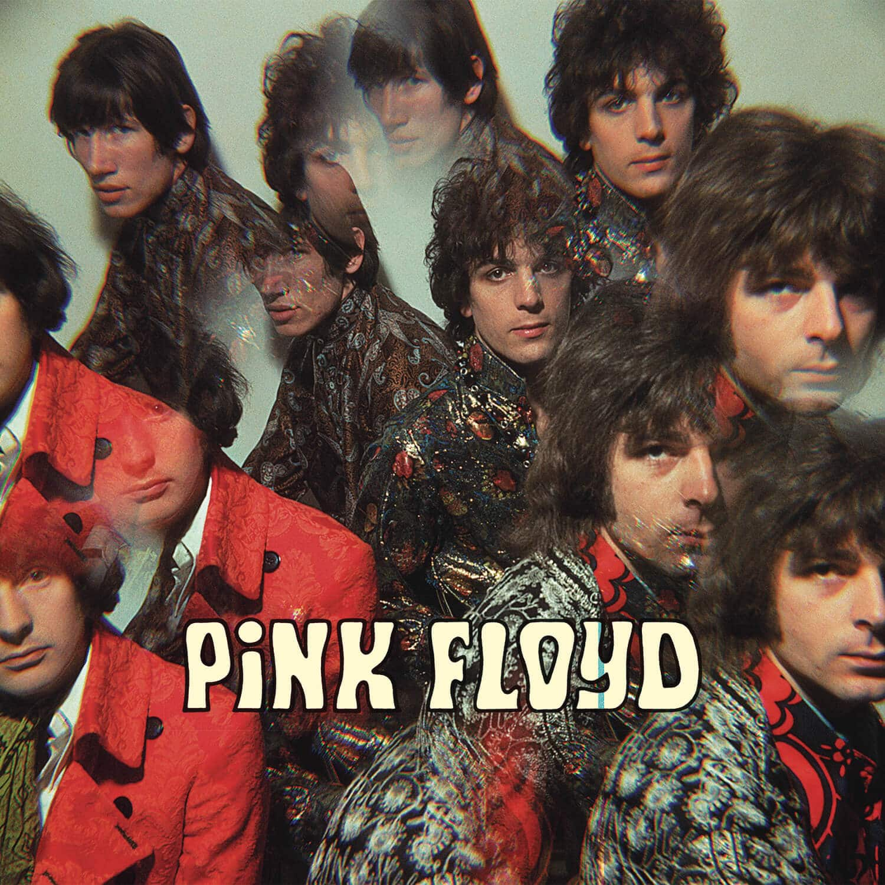
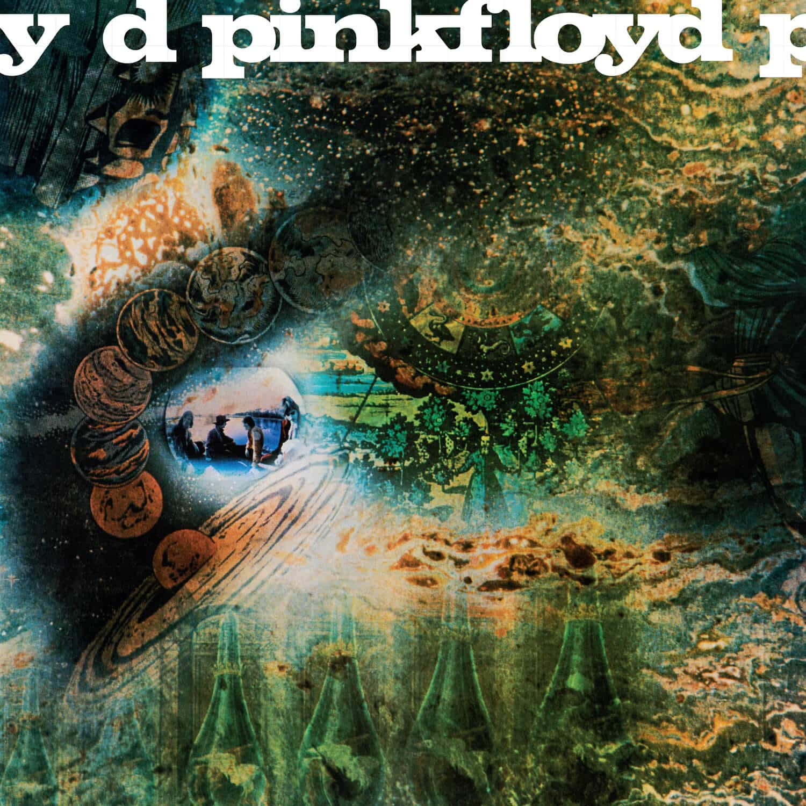
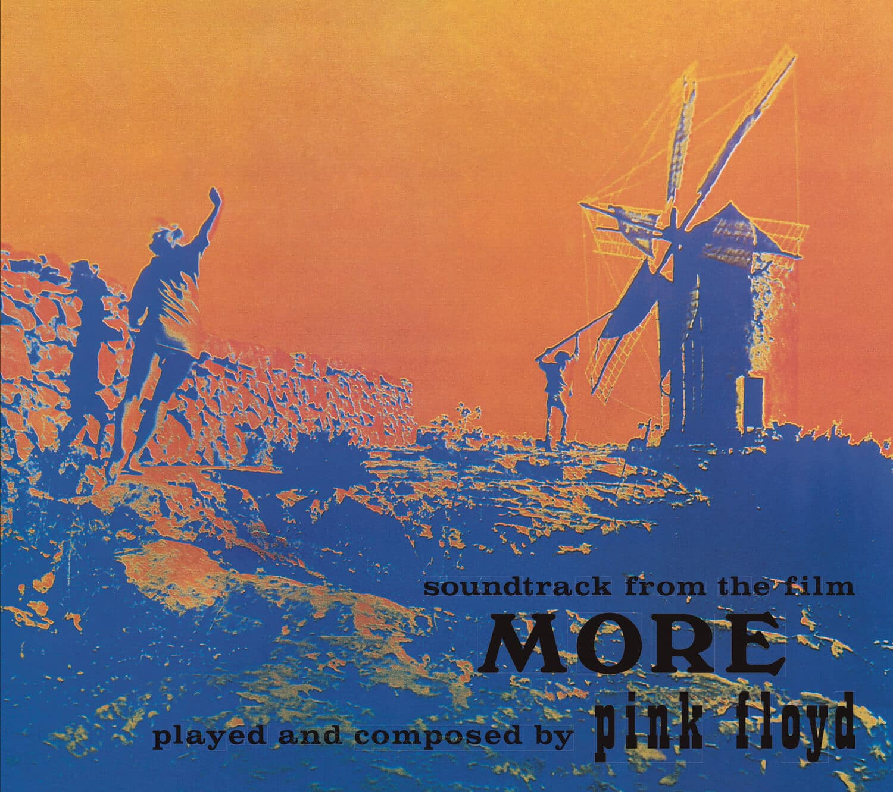
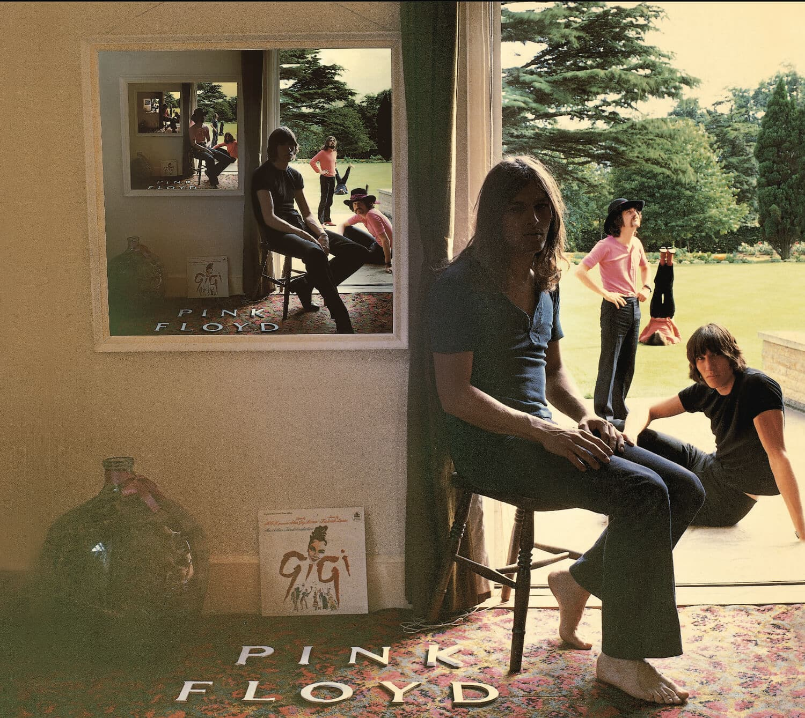
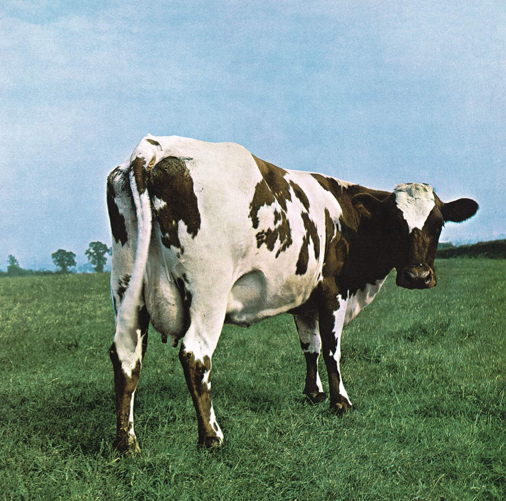
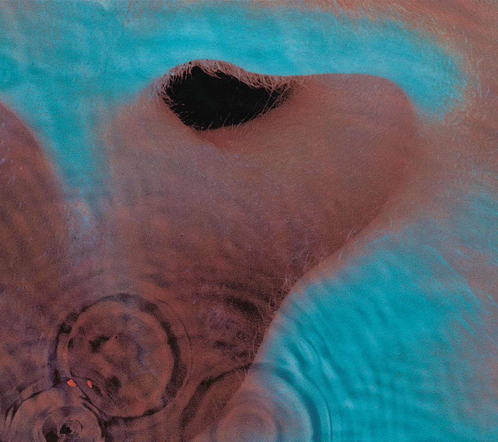
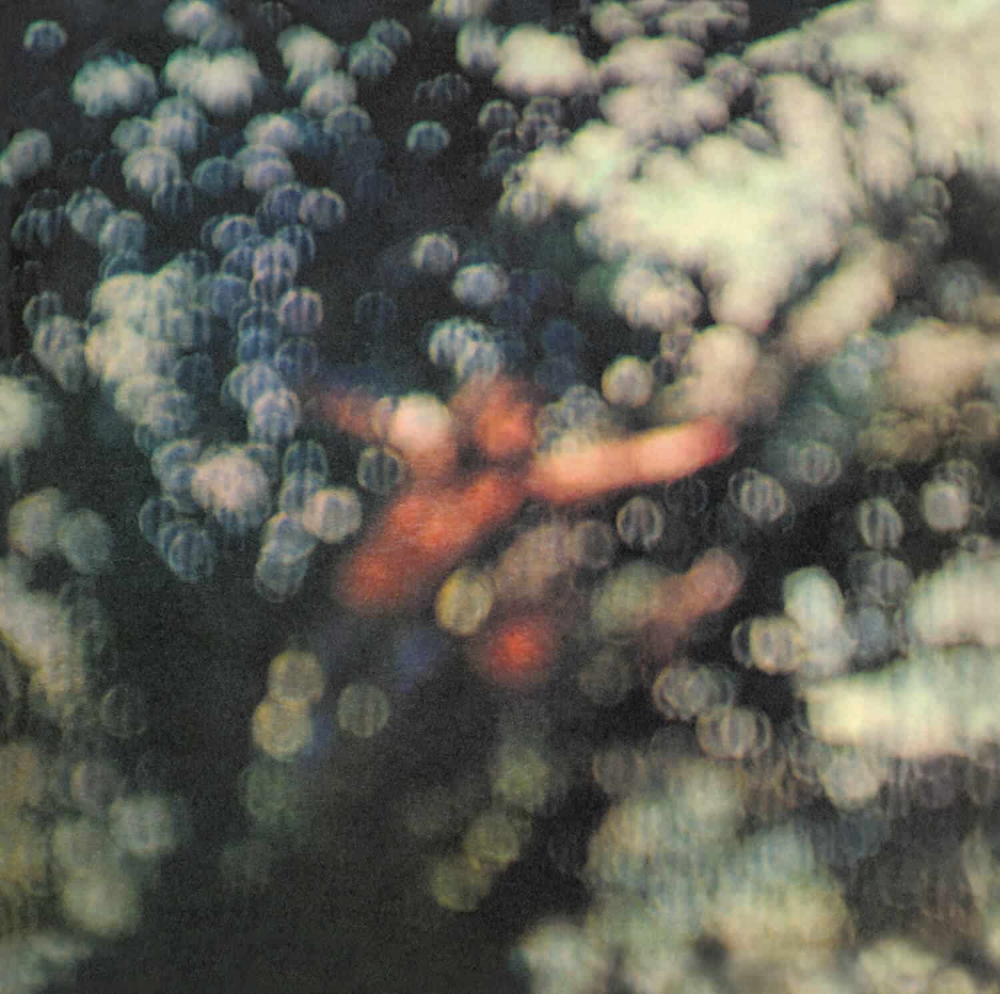

Explore the albums
The Piper at the Gates of Dawn (1967)

Released in 1967, The Piper at the Gates of Dawn serves as Pink Floyd's introduction to the world. It features nine songs, and has a total runtime of 42 minutes. Critically, it was taken suprisingly well for a debut album from an otherwise unknown band. The album is also popular for being the only album Syd Barrett was featured on before the deterioration of his mental health.
A Saucerful of Secrets (1968)

By their second album, Pink Floyd laid their grounds down for what music they wanted to do. One of the biggest changes this album brought for the band was the joining of David Gilmour, who replaced Syd Barrett after his leaving of the band due to mental health issues.
Soundtrack for the film More (1969)
In 1969, Pink Floyd got the chance to write the soundtrack for the movie: More. While the album is not considered a Pink Floyd studio album, considering it's a movie soundtrack, but we'll include it here. The soundtrack was released to mixed perception, that still remains today. While it's not hated, it's not particularly loved as well. It is often considered the ugly duckling of Pink Floyd's discography.
Ummagumma (1969)

Ummagumma is often one of Pink Floyd's most overlooked albums, due to its out of the ordinary nature. The album was Pink Floyd's first double album with the first LP being a live performance of songs like Careful With That Axe, Eugene and others. The other side was taken up by a never-seen-before thing: each member got a quarter of the LP to record their own solo compositions for the album.
Atom Heart Mother (1970)

Atom Heart Mother is suprisingly the most unanimously hated album by Pink Floyd's members. Roger Waters even said:
I think, at that time we both [David Gilmour and Roger Waters] felt, that Atom Heart Mother... well, was a huge pile of rubbish to be honest.
The album was the first (but not the only) time Pink Floyd had a song take up one side of the vinyl. This, of course is the famous Atom Heart Mother suite, a full 23-minute orchestral suite, composed by Ron Geesin from the bare bones rythm and structure the members of Pink Floyd gave him.
Meddle (1971)

Meddle, released in 1971 is often considered to be the real "start of Pink Floyd". It features their other one side songs, Echoes, which is almost universally accepted to be one of the greatest songs ever created (I totally didn't just make this up).
Obscured by Clouds (1972)

Obscured by Clouds, like More is also a movie soundtrack, this time for the movie La Valée. This time, Pink Floyd broke from their usual progressive rock style, and rested on a more traditional rock style with tracks like: When You're In, Wot's... Uh The Deal and The Gold It's in The...
The Dark Side of the Moon (1973)

In 1973, Pink Floyd changed history forever with The Dark Side of the Moon. The album reached the 4th best selling album of all time record and the most weeks on the Billboard Top 200 charts at over 942 non-consecutive weeks. It is often named the Greatest album of all time
by critics, and it's no wonder why. The following quote says it all:
I took it home, okay, and I played it to Judy, who was my first wife. And when it finished, I was turned to see, 'what do you think?' And she was sitting there crying. And I feel quite emotional now, because I thought 'mate we've cracked it.'' But look at that. That is very special.